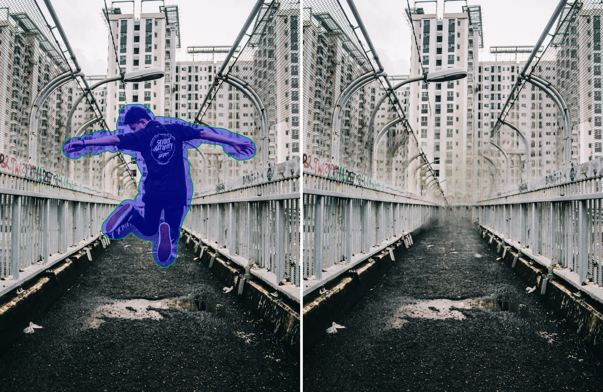
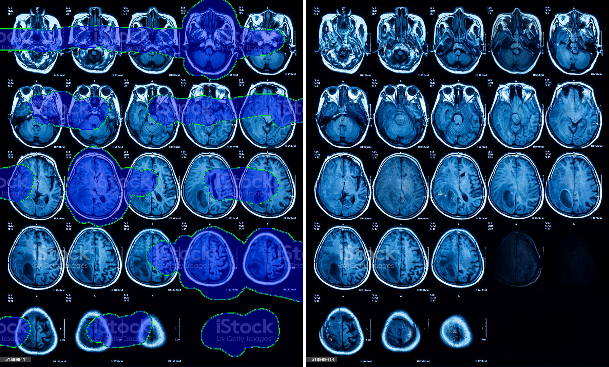

üî•üî•üî•
LaMa generalizes surprisingly well to much higher resolutions (~2k❗️) than it saw during training (256x256), and achieves the excellent performance even in challenging scenarios, e.g. completion of periodic structures.
Abstract
Modern image inpainting systems, despite the significant progress, often struggle with large missing
areas,
complex geometric structures,
and high-resolution images. We find that one of the main reasons for that is the lack of an ef-fective
receptive field in both the inpainting network andthe loss function.
To alleviate this issue, we propose anew method called large mask inpainting (LaMa).
LaM ais based on:
a new inpainting network architecture that uses fast Fourier convolutions,
which have the image-widereceptive field
a high receptive field perceptual loss;
large training
masks,
which unlocks the potential ofthe first two components.
Our inpainting network improves the state-of-the-art across a range of datasets and achieves excellent
performance
even in challenging scenarios, e.g.completion of periodic structures. Our model generalizes
surprisingly well to resolutions that are higher than thoseseen at train time, and achieves this at lower
parameter & compute
costs than the competitive baselines.
Big LaMa ü¶ô (51M) results
Positive examples
More examples
Distortions, Bokeh, Perspective
More examples

Domain transfer examples
More examples

Citation
@article{suvorov2021resolution,
title={Resolution-robust Large Mask Inpainting with Fourier Convolutions},
author={Suvorov, Roman and Logacheva, Elizaveta and Mashikhin, Anton and Remizova, Anastasia and Ashukha, Arsenii and Silvestrov, Aleksei and Kong, Naejin and Goka, Harshith and Park, Kiwoong and Lempitsky, Victor},
journal={arXiv preprint arXiv:2109.07161},
year={2021}